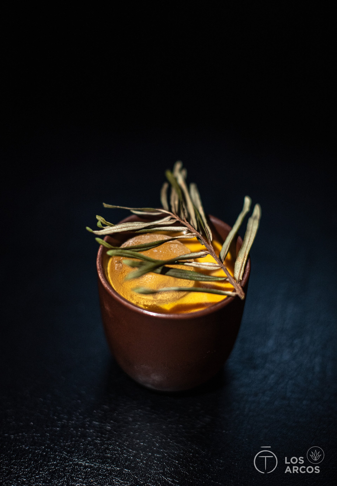

-
01
Yuzu Negroni
Roku Gin · Campari · Cocchi di Torino Vermouth · House Yuzu Cordial · Orange Zest

-
02
Shiso Sour
Hendrick's Gin · Fresh Shiso Leaves · Lemon Juice · Free-Range Egg White · Yuzu Bitters

-
03
Kori Sour
Nikka from the Barrel · Lemon · Fresh Shiso · Egg White · Cedar Wood Bitters · Smoked Salt

-
04
Tochi Daiquiri
Plantation 3 Stars Rum · Fresh Lime · Toasted Sesame Orgeat · Black Lava Salt Rim

-
05
Hana Collins
Sakura-Infused Malfy Gin · St-Germain Elderflower · Lemon Juice · Soda · Edible Blossom

-
06
Kuromitsu Old Fashioned
Suntory Toki · House Kuromitsu Syrup · Angostura Bitters · Orange Bitters · Expressed Orange Peel

-
07
Miso Espresso Martini
Grey Goose Vodka · White Miso Honey · Cold Brew Concentrate · Kahlua · Black Sesame Dust

-
08
Wasabi Highball
Nikka Days · Fresh Wasabi Tincture · Cucumber Water · Premium Soda · Pickled Ginger

Farm to Glass
The Ingredients